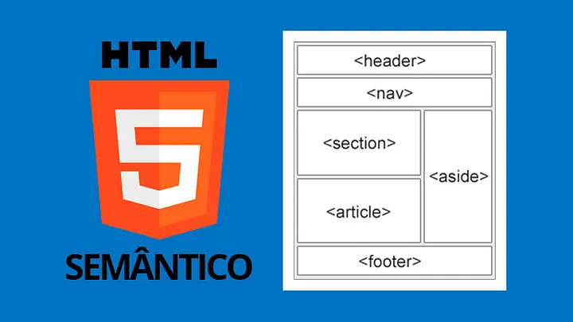

Cada linha de código é uma oportunidade de criar algo incrível. Sou movido pela curiosidade e pela vontade de sempre aprender mais. Programar é transformar o impossível em realidade, e estou sempre pronto para o próximo desafio. #PrograçãoÉTodoDia
🔍 Como a Web Funciona – Desvendando o Mundo dos Bastidores Online! 🌐
🕵️♂️ O que acontece ao digitar uma URL
Já parou para pensar o que acontece quando você digita uma URL no
navegador e, como mágica, aparece uma página brilhante e cheia de vida
na sua tela? 🌟 Bom, vou te contar esse segredo de uma maneira leve e
divertida. 🕵️♂️
🚀 Clientes e Servidores
Imagina que a web é uma estrada. No começo da estrada (em casa) está
você, o cliente. No outro extremo, está o
servidor, como se fosse uma loja com o que você quer comprar (ou
acessar). Quando você pede uma página, é como pedir um produto na loja.
O servidor envia a página para você – é só esperar a entrega! 📦
🛠️ Por trás das Cortinas
A web não é só cliente e servidor – existem várias outras engrenagens!
Olha só:
Conexão de Internet: A estrada que te leva da sua casa até a loja.🛣️
TCP/IP: O sistema de transporte que leva os dados, como se fosse seu
carro ou bicicleta para chegar na loja. 🚗🚴♂️
DNS: O catálogo de endereços da web. Digita "mozilla.org"? O DNS
transforma isso em números que o navegador entende. 🗺️
HTTP: A linguagem do pedido. É como se você falasse para o servidor:
"Me manda esse site aí, por favor?" 💬
Arquivos Componentes: O que vem na "caixa" do site. São os arquivos
de código (HTML, CSS, JavaScript) e recursos (imagens, vídeos, PDFs)
que fazem o site funcionar. 📂
🔄 E como acontece a mágica?
Você digita o endereço do site (ex: "exemplo.com") no navegador. 🖥️
O navegador pergunta ao DNS: "Ei, onde está esse site?" 🌍
O DNS encontra o endereço e o navegador pede ao servidor: "Me manda
os arquivos do site!" 📬
O servidor responde com "200 OK" (tradução: "Claro, aqui estão!") e
manda os arquivos em pacotinhos de dados. 📦📦
O navegador monta tudo e, voilà, o site aparece na sua tela! 🎉
💡 Pacotes de dados?
Sim, a web envia os dados em pedacinhos, como um quebra-cabeça que o
navegador junta para formar o site completo. Isso permite que vários
usuários acessem o site ao mesmo tempo, sem sobrecarregar o servidor. 😎
Quer saber mais sobre como a internet que você usa todos os dias
funciona? Comente abaixo e compartilhe! 🌐✨
🎯 Seções básicas de um site bem estruturado 🎯
Ao criar uma página da web, é importante seguir uma estrutura padrão para
garantir que os usuários tenham uma experiência consistente e fácil de
navegar. Aqui estão os componentes principais que você deve considerar:
💡 Cabeçalho (header): Geralmente, é a faixa na parte
superior, onde ficam o logotipo e o título principal. É aqui que as
informações consistentes do site são exibidas de página para página.
🗺️ Barra de navegação (nav): Conjunto de links para as
principais seções do site. Manter a navegação clara e consistente é
essencial para evitar a frustração do usuário.
📄 Conteúdo principal (main): A área central da página,
que contém o conteúdo exclusivo de cada página, como artigos, vídeos ou
mapas. Essa é a parte que mais varia de uma página para outra.
🔗 Barra lateral (sidebar): Elementos periféricos como
links, anúncios e informações contextuais ao conteúdo principal.
🖋️ Rodapé (footer): Local para informações secundárias,
como direitos autorais ou informações de contato. Também pode ser útil
para melhorar o SEO do site.
💻 Ao estruturar um site, essas seções ajudam a criar uma experiência de
navegação mais eficiente e organizada para os visitantes.
🎯 Principais Elementos de Layout em HTML 🎯

Se você está começando no desenvolvimento web, é importante entender
como usar os elementos de seção do HTML de forma eficiente. Aqui estão
alguns dos principais que você deve conhecer:
💡 <main>: Usado para o conteúdo
principal e único de uma página. Deve aparecer apenas uma vez por página
e ser colocado diretamente dentro do <body>.
📝 <article>: Ideal para blocos de conteúdo que fazem sentido sozinhos, como uma
postagem de blog. Ele pode existir independentemente do restante da
página.
📊 <section>: Semelhante ao <article>, mas mais adequado para agrupar funcionalidades únicas, como um
conjunto de manchetes ou um mapa. Dica: sempre comece uma
<section> com um título.
📚 <aside>: Utilizado para conteúdo complementar, como biografias de autores,
glossários ou links relacionados. Ele não está diretamente relacionado
ao conteúdo principal, mas oferece suporte.
🔝 <header>: Representa um grupo de conteúdo introdutório. Se for filho de
<body>, é o cabeçalho global. Se for filho de
<article> ou
<section>, ele é específico para aquela seção.
🧭 <nav>: Contém a navegação principal da página. Links secundários não devem
ir aqui.
🔚 <footer>: Representa o conteúdo final da página, como direitos autorais ou
informações de contato.
Esses elementos ajudam a manter seu código organizado e fácil de
entender, além de melhorar a acessibilidade e a experiência do usuário.
🧐💡Você não precisa baixar vídeos do YouTube para colocá-los no seu site ou blog! Basta seguir esses passos simples: 💡🧐
1️⃣ Vá até o vídeo que você quer compartilhar.
2️⃣ Clique em Compartilhar abaixo do vídeo.
3️⃣ Selecione a opção Incorporar e copie o código <iframe>.
4️⃣ Cole esse código na sua página... e pronto! 🎉
Agora o vídeo está incorporado no seu site ou blog sem precisar baixar nada!
Super simples e prático, né? 😎
💡 Dica Rápida: Incorpore Mapas do Google diretamente no seu site! 🌍
Sabia que você pode adicionar um Google Maps diretamente no seu site ou blog sem precisar de plugins complicados? É super simples! Basta seguir esses passos:
1️⃣ Vá para o Google Maps e encontre o local que você quer compartilhar.
2️⃣ Clique no menu de três linhas no canto superior esquerdo.
3️⃣ Selecione Compartilhar ou incorporar mapa.
4️⃣ Escolha Incorporar mapa e copie o código <iframe>.
5️⃣ Cole esse código no seu site... e voilà! 🎯
Agora, seu mapa está integrado no site, oferecendo uma visualização interativa para seus usuários! 🚀